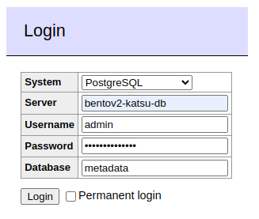
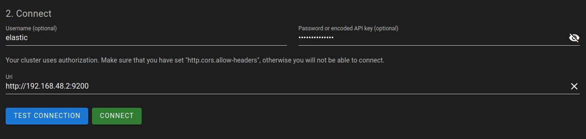

Development
Before running any installation steps, make sure you've
set up bentoctl and have activated its virtual environment.
Accessing containers with bentoctl
To start a shell session within a particular container, use the following command (here, web is used as an example):
./bentoctl.bash shell web
Optionally, the shell to run can be specified via --shell /bin/bash or --shell /bin/sh.
Working on web (as an example)
To work on the bento_web repository within a BentoV2 environment, run the following command:
./bentoctl.bash work-on web
This will clone the bento_web repository into ./repos/web if necessary, pull the local
development image, and start it in local mode. In this mode, the container has a volume mapping
to the ./repos/web directory, which means on-the-fly Webpack building will be available.
All local-mode services are inherently in development mode, even if MODE=prod globally,
through inheritance of Compose files.
You can find the default image tag variables in ./etc/bento.env and overwrite them in local.env, look for the
pattern BENTOV2_[name]_VERSION.
The version tags correspond to the PR number (not its name), e.g. BENTOV2_WEB_VERSION=pr-216 indicates that the
image was built from PR #216 in bento_web.
Note: Most of the time, you will not need to worry about changing this, unless changes were made to the dev image's entrypoint.
Where are the Docker images?
By default, the images used are those built by GitHub CI workflows, triggered by commit and PR events and published to the Bento images registry. If after changing the version tag of an image the service's container can no longer be created, it is probably because the tag does not exist on GitHub.
To remediate this, you have two options: - Create a PR for the branch you want to work on, in order to trigger a CI workflow that will build an image tagged with the PR number (prefered) - Manually build and tag a docker image on your machine (avoid when possible)
Local bento_web image example
Note: this approach is a last resort for local development only. In some situations, we cannot always assume that working CI artifacts are available for every service used by Bento.
For the example, lets assume we changed BENTOV2_WEB_VERSION to be equal to localonly, which automatically
makes BENTOV2_WEB_VERSION_DEV=localonly-dev.
# Switch web to local mode
bentoctl work-on web
# Move to cloned local service directory
cd ./repos/web
# Checkout to a specific branch, or create a new one
git checkout [...]
# Build the dev.Dockerfile on your machine, using the env variables values
# Tag 1 => BENTOV2_WEB_IMAGE:BENTOV2_WEB_VERSION
# Tag 2 => BENTOV2_WEB_IMAGE:BENTOV2_WEB_VERSION_DEV
docker build -f dev.Dockerfile . \
-t ghcr.io/bento-platform/bento_web:localonly \
-t ghcr.io/bento-platform/bento_web:localonly-dev
# Back to root
cd ../../
# Start web with your local image
./bentoctl.bash run web
⚠️ Warning for local development ⚠️
In local mode, be sure to navigate to the cloned repository ./repos/web/ (or any other service repo you want to work
on locally), and checkout on the PR branch from which the dev Docker image was built.
Migrating the repository from v2.10 and prior
Move your local bento_web project to the ./repos directory (named web):
mv ./path/to/my/bentoweb ./repos/web
You will then have repos/web available for the ./bentoctl.bash work-on web command, which will spin up the
web container tethered to your local directory with a Docker volume. Internally,
npm run watch is executed so changes made locally will be reflected in the container.
Note: if you get stuck on an NGINX
500 Internal Service Error, give it another minute to spin up. If it persists, run./bentoctl.bash shell webto access the container, and then runnpm run watchmanually.
Switching web back to a pre-built version
In the section above, we switched web to a local version where the code is attached to the container via a Docker
bind mount (i.e., a filesystem path volume). To switch back to a pre-built version of web, run the following command:
./bentoctl.bash prebuilt web
This will work for any service where both a local development and pre-built image exist.
Communicating with services (in development)
When MODE=dev, some service containers are bound to ports on the host, so debugging can be done without
going through the gateway.
The following is a list of all host port allocations for Bento services in development mode:
| Service | Port | Debugger Port |
|---|---|---|
| Adminer | 8080 | N/A |
| Aggregation | 9500 | 5684 |
| Beacon | 5000 | 5683 |
| cBioPortal | 8089 | N/A |
| Drop Box | 6000 | Unimplemented |
| DRS | 7007 | 5682 |
| Elasticvue | 8081 | N/A |
| Event relay | 8750 | Unimplemented |
| Katsu | 8000 | 5678 |
| Katsu DB | 5432 | N/A |
| Notification | 8500 | 5681 |
| Public | 8090 | Unimplemented |
| Redis | 6379 | N/A |
| Reference | 9510 | 9501 |
| Reference DB | 9512 | N/A |
| Service Registry | 5010 | Unimplemented |
| WES | 9250 | 5680 |
Local NPM package development
The bento_web and bento_public projects use Bento specific packages for charts and auth.
In production, these packages are installed from the NPM registry. When developing simultanuously on a given web app and package, it is helpful to be able to use the locally built package without having to publish unfinished dev packages to NPM.
For this use case:
# cd to the package's code directory
cd ../bento_charts # assumes bento_charts is in parent dir
# Build and pack the package as a .tgz file
npm run buildpack
# Go back to Bento's dir
cd ../bento
# Copy the packaged file to the Bento packs dir
cp ../bento_charts/packs/*.tgz ./packs
# Start a web app in dev mode
bentoctl dev web
# Open a shell in the container (or open the dev container with Code)
bentoctl shell web
# Install the package using the mounted pack file on /packs
npm install /packs/bento-charts-2.5.0.tgz
If subsequent modifications are made to the package's code, you will need to create a new pack file
and install it again in the app with npm install.
Adding services
See adding-services.md for some considerations when adding new services to Bento.
Using Adminer
An Adminer container is deployed in dev and local mode, it can be used to inspect the Katsu database during development.
Go to localhost:8080 to access the login page. Fill the fields with the values shown below, using the value of
BENTOV2_KATSU_DB_PASSWORD for the password field.

Using Elasticvue
An Elasticvue container is also deployed in dev and local mode, allowing users to inspect the Gohan Elasticsearch node in a GUI.
Go to localhost:8081 to access the Elasticvue interface. Fill the username field with elastic and the password
field with the value of BENTOV2_GOHAN_ES_PASSWORD. The Uri field must use the IP of the gohan-es container on
port 9200 (e.g. http://192.168.48.2:9200), it can be found with this command:
docker inspect bentov2-gohan-elasticsearch | grep -i ipaddress
Note: the CORS instructions have already been taken care of in the docker-compose.dev.yaml file.

Converting Phenopackets
Phenopackets JSON documents can be converted from V1
to V2 using bentoctl and
Phenopacket-tools as its backend.
See the relevant guide: Converting Phenopackets from V1 to V2 using bentoctl